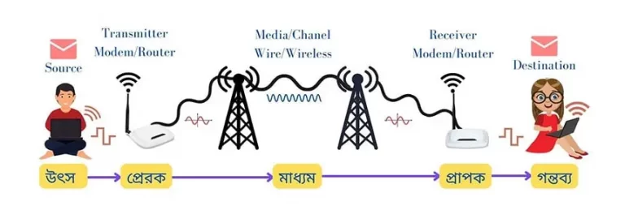
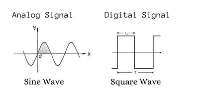

© Sajedul Islam Tushar
তথ্য ও যোগাযোগ প্রযুক্তি
অধ্যায় ০২: কমিউনিকেশন সিস্টেমস ও নেটওয়ার্কিং
ডেটা কমিউনিকেশন (Data Communication) কী?
কমিউনিকেশন শব্দটি Communicare শব্দ হতে এসেছে যার অর্থ to share (আদান-প্রদান/ বিনিময়) । যন্ত্র বা বিভিন্ন কমিউনিকেশন ডিভাইস ব্যবহার করে পরস্পরের মধ্যে নির্ভরযোগ্যভাবে ডেটা বা তথ্যের আদান-প্রদান হচ্ছে ডেটা কমিউনিকেশন (Data Communication)।
Note: ডেটা কমিউনিকেশনের কার্যকারীতা মূলত তিনটি জিনিসের উপর নির্ভর করে।
১) ডেলিভেরি (Delivery) ২) অ্যাকুরেসি (Accuracy) ৩) টাইমলাইনস (Timeliness)

ডেটা ট্রান্সমিশন স্পিড বা ব্যান্ডউইথ (Bandwidth) কী?
প্রতি একক সময়ে বা প্রতি সেকেন্ডে যে পরিমাণ ডাটা এক কম্পিউটার থেকে অন্য কম্পিউটারে বা এক ডিভাইস থেকে অন্য ডিভাইসে স্থানান্তর করা হয়, তাকে ডাটা ট্রান্সমিশন স্পিড বলা হয়। এই ডাটা ট্রান্সমিশন স্পিডকে ব্যান্ডউইডথ বলা যেতে পারে। প্রতি সেকেন্ডে কত বিট ডেটা ট্রান্সফার হতে পারে তার উপর ভিত্তি করে ডেটা ট্রান্সমিশন স্পীড হিসাব করা হয় । অর্থাৎ ব্যান্ডউইথ একক হলো বিট পার সেকেন্ড (bps)।
Note:ডেটা ট্রান্সমিশন স্পীডকে মূলত তিন ভাগে ভাগ করা হয়ে থাকে।
১) ন্যারো ব্যান্ড (Narrow Band) ২) ভয়েস ব্যান্ড (Voice Band) ৩) ব্রডব্যান্ড (Broad Band)
Bandwidth Calculation:
Bit- 0,1 1Byte= 8 bit 1KB= 1024B 1MB=1024KB
1GB= 1024MB 1TB= 1024GB
ন্যারোব্যান্ড (Narrow Band) কী?
যদি কোন নেটওয়ার্ক চ্যানেলের ডেটা ট্রান্সমিশন স্পীড 45bps হতে 300bps পর্যন্ত হয়ে থাকে তবে তাকে ন্যারোব্যান্ড (Narrow Band) বা সাব-ভয়েস (Sub-voice) ব্যান্ড বলা হয়। এই ব্যান্ড সাধারনত ধীরগতির ডেটা স্থানান্তরের ক্ষেত্রে ব্যবহার করা হয়ে থাকে। টেলিগ্রাফ মেশিনে এই ট্রান্সমিশন স্পীড ব্যবহার করা হতো।
ব্রডব্যান্ড (Broad Band) কী?
উচ্চগতিসম্পন্ন ডেটা ট্রান্সমিশন সিস্টেমকে ব্রডব্যান্ড(Broad Band) বলা হয়ে থাকে। উচ্চগতির ইন্টারনেট ব্যবস্থার ক্ষেত্রে ব্রডব্যান্ড এর ব্যবহার বর্তমানে সবথেকে বেশি। ব্রড ব্যান্ডের ডেটা ট্রান্সমিশন স্পিড কমপক্ষে ১ Mbps হতে ২৫Mbps পর্যন্ত হয়ে থাকে। সাধারণত কো-এক্সিয়াল ক্যাবল, স্যাটেলাইট, সাইবার লাইন (DSL-Digital Satellite Link), অপটিক্যাল ফাইবারে ডেটা স্থানান্তরে ব্রডব্যান্ড ব্যবহৃত হয়।
© Sajedul Islam Tushar
ভয়েসব্যান্ড (Voice Band) কী?
ভয়েস ব্যান্ডের ডেটা ট্রান্সমিশন স্প্রীড সাধারনত 9600bps বা 9.6kb পর্যত হয়ে থাকে। যদি কোন নেটওয়ার্ক চ্যানেলের ডেটা ট্রান্সমিশন স্পীড 300bps এর উপর হতে 9600bps পর্যন্ত হয়ে থাকে তবে তাকে ভয়েসব্যান্ড (Voice Band) বলা হয়। কম্পিউটার থেকে প্রিন্টারে অথবা Scanner থেকে কম্পিউটারে ডেটা আদান-প্রদানে ভয়েস ব্যান্ডের ব্যবহৃত হয়। Voice আদান-প্রদানে এটি বেশী ব্যবহৃত হয় বলে একে ভয়েস ব্যান্ড (Voice Band) বলে। টেলিফোন লাইনে ব্যবহৃত ডেটা ট্রান্সমিশন স্পীড ভয়েস ব্যান্ডের অন্যতম উদাহরণ।
সিগনাল (signal) কী ?
সিগনাল বলতে সময়ের সাথে ভোল্টেজের পরিবর্তনকে বোঝানো হয়। যখন ভোল্টেজ শূন্য থাকে এবং সেখান থেকে বাড়তে বাড়তে উপরে উঠে তখন কিছু পরিবর্তন হয় এবং ভোল্টেজ কমার সাথে সাথে এটি নিচে নামতে থাকে। সময়ের সাথে ভোল্টেজের এই উঠা-নামাই হচ্ছে সিগনাল।
Signal কে দুই ভাগে ভাগ করা যায়- ১। Analog Signal. ২। Digital Signal.

Note: ডিজিটাল সিগনালের ওয়েভফর্মকে বলা হয় স্কয়ার ওয়েভ এবং এনালগ সিগনালের ওয়েভফর্মকে বলা হয় সাইন ওয়েভ। একটি ওয়েভের সর্বোচ্চ ও সর্বনিম্ন পয়েন্টের দূরত্বকে বলা হয় এমপ্লিচ্যুড বা বিস্তার। একটি সিগনাল এর এমপ্লিচ্যুড যত বেশি হবে সেই সিগনাল তত বেশি শক্তিশালী হবে। সিগনাল এর এই শক্তিকে মাপা হয় এম্পিয়ার হিসেবে।
Analog Signal or এনালগ সিগন্যালঃ সময়ের সাথে পরিবর্তনশীল বৈদ্যুতিক সিগন্যালকে এনালগ সিগন্যাল বলে। এনালগ সিগন্যালের অ্যামপ্লিচিউড সর্বোচ্চ এবং সর্বনিম্ন মানের মধ্যে যে কোন মান গ্রহণ করতে পারে।
Digital Signal or ডিজিটাল সিগন্যালঃ ডিজিটাল সিগন্যাল এমন একটি সিগন্যাল যা সাধারণত দুটি বা নির্দিষ্ট কয়েকটি ভোল্টেজ লেভেল নিয়ে গঠিত। ডিজিটাল সিগন্যালের ভোল্টেজ লেভেল দুটিকে ০ এবং ১ দ্বারা প্রকাশ করা হয়।
ডেটা ট্রান্সমিশন মেথড (Data transmission method) কী?
ডেটা কমিউনিকেশনে উৎস থেকে ডেটা গন্তব্যে পাঠানোর সময় একটি নির্দিষ্ট পদ্ধতিতে পাঠানো হয়ে থাকে। যে পদ্ধতিতে ডেটা উৎস থেকে গন্তব্যে বা এক কম্পিউটার থেকে অন্য কম্পিউটারে ট্রান্সমিট হয়ে থাকে তাকে ডেটা ট্রান্সমিশন মেথড (Data transmission method) বলে।
উৎস থেকে গন্তব্যে ডেটা দুটি পদ্ধতিতে ট্রান্সমিট হয়ে থাকে। ১. প্যারালাল ট্রান্সমিশন ২. সিরিয়াল ট্রান্সমিশন
প্যারালাল ট্রান্সমিশন (Parallel transmission) কী?
যে ট্রান্সমিশনে ডেটা প্যারালাল বা সমান্তরালভাবে আদান প্রদান হয় তাকে প্যারালাল ডেটা ট্রান্সমিশন বলে। এই পদ্ধতিতে ডেটা বিট ভিন্ন ভিন্ন লাইনের মধ্যে দিয়ে একই সাথে পাঠানো হয়ে থাকে ।
© Sajedul Islam Tushar
Note: প্যারালাল ট্রান্সমিশনে ডেটা সাধারণত ৮ বিট, ১৬ বিট বা ৩২ বিট ইত্যাদি উপায়ে চলাচল করতে পারে।
সিরিয়াল ট্রান্সমিশন (Serial transmission)কী?
যে ট্রান্সমিশনে একটি মাত্র লাইন ব্যবহার করে ডেটা পর্যায়ক্রমে ১ বিট করে আদান প্রদান করা হয়ে থাকে তাকে সিরিয়াল ডেটা ট্রান্সমিশন বলে। এই পদ্ধতিতে একসাথে আট বিট ডেটা করে পাঠানো হয়ে থাকে। উৎস থেকে গন্তব্যের দূরত্ব বেশী হলে সধারনত এই পদ্ধতি ব্যবহার করা হয়ে থাকে।
বিট সিনক্রোনাইজেশন (Bit synchronisation) কী?
সিরিয়াল ডেটা ট্রান্সমিশনে এক কম্পিউটার থেকে অন্য কম্পিউটারে ডেটা ট্রান্সমিশন হওয়ার সময় অবশ্যই দুই কম্পিউটারের মধ্যে এমন একটি সমন্বয় ব্যবস্থা থাকা দরকার যাতে সিগনাল বিটের শুরু ও শেষ বুঝতে পারে। বিটের শুরু ও শেষ বুঝতে না পারলে গ্রহীতা কম্পিউটার সেই সিগনাল থেকে ডেটা পুনরুদ্ধার করতে পারে না। সিরিয়াল ডেটা ট্রান্সমিশনে ডেটা ট্রান্সমিট করার সময় ডেটার বিট গুলোর মধ্যে যে সমন্বয় করা হয় তাকে বিট সিনক্রোনাইজেশন (Bit synchronisation) বলে।
Note: বিট সিনক্রোনাইজেশনের উপর ভিত্তি করে সিরিয়াল ডেটা ট্রান্সমিশনকে তিন ভাগে ভাগ করা যায়।
- ১। অ্যাসিনক্রোনাস (Asynchronous) ডেটা ট্রান্সমিশন,
- ২। সিনক্রোনাস (synchronous) ডেটা ট্রান্সমিশন,
- ৩। আইসোক্রনাস (Isnchronous) ডেটা ট্রান্সমিশন।
অ্যাসিনক্রোনাস ডেটা ট্রান্সমিশন (Asynchronous Transmission) কী?
যে ডেটা ট্রান্সমিশন সিস্টেমে ডেটা প্রেরক হতে গ্রাহক কম্পিউটারে ক্যারেক্টার বাই ক্যারেক্টার ট্রন্সমিট হয় তাকে অ্যাসিনক্রোনাস ট্রান্সমিশন বলে । অ্যাসিনক্রোনাস ট্রান্সমিশনে প্রতিটি ক্যারেক্টার ট্রান্সমিট করার মধ্যবর্তী বিরতি সময় অসমান হয়ে থাকে। এই পদ্ধতিতে প্রতিটি ক্যারেক্টার এর 8 বিটের সাথে একটি স্টার্ট বিট এবং শেষে একটি বা দুটি স্টপ বিট যুক্ত করে প্রতিটি ক্যারেক্টার 10 অথবা 11 বিটের ডেটায় পরিণত করে তারপর ট্রন্সমিট করা হয়। কী-বোর্ড থেকে কম্পিউটারে কিংবা কম্পিউটার থেকে প্রিন্টারে ডেটা পাঠানোর জন্য এ পদ্ধতি ব্যবহৃত হয়।
Note: কীবোর্ড হতে কম্পিউটারে, কম্পিউটার হতে প্রিন্টারে, কম্পিউটার হতে কার্ড রিডারে, কম্পিউটার হতে পাঞ্চকার্ড এ অ্যাসিনক্রোনাস ট্রান্সমিশন ব্যবহার করা হয়।

সিনক্রোনাস ডেটা ট্রান্সমিশন (Asynchronous Transmission) কী?
যে ডেটা ট্রান্সমিশন সিস্টেমে ডেটাকে প্রথমে একটি প্রাইমারি স্টোরেজ ডিভাইস ব্যবহার করে সংরক্ষণ করে ডেটাকে ব্লক বা প্যাকেট আকারে ভাগ করে প্রতিবারে একটি করে ব্লক ট্রান্সমিট করা হয় তাকে সিনক্রোনাস ট্রান্সমিশন বলে।
© Sajedul Islam Tushar
সিনক্রোনাস ট্রান্সমিশনে প্রতিটি ব্লক ট্রান্সমিট করার মধ্যবর্তী বিরতি সময় সব সময় সমান থাকে। প্রতিটি ব্লকের শুরুতে একটি হেডার ইনফরমেশন ও শেষে একটি ট্রেইলার ইনফরমেশন যুক্ত করা হয়। কম্পিউটার হতে কম্পিউটারে, কম্পিউটার বা একাধিক ডিভাইসে একই সাথে ডেটা ট্রান্সমিট করতে এই পদ্ধতি ব্যবহার করা হয়।
আইসোক্রনাস ডেটা ট্রান্সমিশন (Isnchronous Transmission) কী?
অ্যাসিনক্রোনাস ও সিনক্রোনাস ডেটা ট্রান্সমিশন এর সমন্বিত রুপ হলো আইসোক্রনাস ডেটা ট্রান্সমিশন, যাকে আবার সিনক্রোনাস ট্রান্সমিশনের উন্নত ভার্সনও বলা হয়ে থাকে। এই পদ্ধতিতে ডেটা সুষম বিটরেটে ট্রান্সমিট হয়ে থাকে। এ পদ্ধতিতে প্রেরক হতে প্রাপকে অ্যাসিনক্রোনাস পদ্ধতির স্টার্ট ও স্টপ বিটের মাঝে ব্লক আকারে ডেটা স্থানান্তরিত হয়। এখানে দু’টি ব্লকের মধ্যে সময়ের পার্থক্য একেবারে 0 (শূন্য) রাখার চেষ্টা করা হয়। রিয়েলটাইম অ্যাপ্লিকেশন বা মাল্টিমিডিয়া ( অডিও, ভিডিও, ইমেজ ইত্যাদি) ফাইল ট্রন্সমিট করার জন্য আইসোক্রনাস ট্রান্সমিশন ব্যবহার করা হয়।
ডেটা ট্রান্সমিশন মোড (Data Transmission Mode) কী?
ডেটা ট্রান্সমিশনের সময় ডেটা উৎস থেকে উৎপন্ন হয়ে একটি নির্দিষ্ট দিকে প্রবাহিত হয়। উৎস থেকে গন্তব্যে ডেটা ট্রান্সফারের ক্ষেত্রে ডেটা প্রবাহের দিককে ডেটা ট্রান্সমিশন মোড (Data Transmission Mode) বলা হয়।
Note: ডেটা প্রবাহের দিকের উপর ভিত্তি করে ডেটা ট্রান্সমিশন মোডকে তিন ভাগে ভাগ করা যায়।
১) সিমপ্লেক্স (Simplex) ২) হাফ ডুপ্লেক্স (Half- Duplex) ৩) ফুল ডপ্লেক্স (Full-Duplex)
প্রাপকের সংখ্যা ও ডেটা গ্রহণের অধিকারের উপর ভিত্তি করে ডেটা ট্রান্সমিশন মোডকে তিন ভাগে ভাগ করা যায়।
১) ইউনিকাস্ট (Unicast) ২) ব্রডকাস্ট (Broadcast) ৩) মাল্টিকাস্ট (Multicast)
ইউনিকাস্ট ডেটা ট্রান্সমিশন মোড (Unicast Mode) কী?
যে ট্রান্সমিশন পদ্ধতিতে একজন প্রেরক ও একজন গ্রাহক থাকে এবং এদের মধ্যে যে কমিউনিকেশন হয়ে থাকে তাকে ইউনিকাস্ট ডেটা ট্রান্সমিশন মোড বলে। ইউনিকাস্ট ডেটা ট্রান্সমিশন মোডে একটি মাত্র নোড থেকে কেবলমাত্র একটি নোডের মধ্যে ডেটা আদান-প্রদান করা হয়ে থাকে। এটি one-to-one বা পয়েন্ট টু পয়েন্ট মোড হিসেবেও পরিচিত। যেমন-ফ্যাক্স, টেলিফোন, মোবাইল ফোন, ওয়াকিটকি, একক এসএমএম ইত্যাদি।
ব্রডকাস্ট ডেটা ট্রান্সমিশন মোড (Broadcast Mode) কী?
যে ট্রান্সমিশন পদ্ধতিতে নেটওয়ার্কভুক্ত কোন নোড হতে ডেটা ট্রান্সমিট হলে ঐ নেটওয়ার্কভুক্ত সকল নোডই তা গ্রহণ করতে পারে তাকে ব্রডকাস্ট ডেটা ট্রান্সমিশন মোড বলে। এটি one-to-all মোড হিসেবেও পরিচিত। যেমন-টেলিভিশন ও রেডিও সম্প্রচার ইত্যাদি। ব্রডকাস্ট ট্রান্সমিশন শুধুমাত্র সিমপ্লেক্স হয়ে থাকে।
মাল্টিকাস্ট ডেটা ট্রান্সমিশন মোড (Multicast Mode) কী?
যে ট্রান্সমিশন পদ্ধতিতে নেটওয়ার্কভুক্ত কোন একটি নোড থেকে ডেটা প্রেরন করলে তা শুধুমাত্র নেটওয়ার্কের অধিনস্ত নির্দিষ্ট কিছু নোড সেটি গ্রহণ করতে পারে তাকে মাল্টিকাস্ট ডেটা ট্রান্সমিশন মোড বলে। যেমন- অডিও কনফারেন্স, ভিডিও কনফারেন্স, গ্রুপ SMS, MMS ইত্যাদি। মাল্টিকাস্ট হাফ-ডুপ্লেক্স ও ফুল-ডুপ্লেক্স হয়ে থাকে। একে 1-to-n ডেটা ট্রান্সমিশন মোড ও বলা হয়।
© Sajedul Islam Tushar

সিমপ্লেক্স মোড (Simplex Mode) কী?
যে ডেটা ট্রান্সমিশন পদ্ধতিতে ডেটা শুধুমাত্র একদিক থেকে প্রেরণ করা যায় তাকে সিমপ্লেক্স ডেটা ট্রান্সমিশন মোড বলে। সিমপ্লেক্স ডেটা ট্রান্সমিশনে সিগন্যাল কেবল একদিকে প্রবাহিত হতে পারে অর্থাৎ এই পদ্ধতিতে প্রেরক প্রান্ত শুধু ডেটা প্রেরন করতে পারবে আর গ্রাহক প্রান্ত সেই ডেটা শুধু গ্রহন করতে পারবে। এই ট্রান্সমিশনে প্রেরক কখনোই গ্রাহক হিসেবে বা গ্রাহক কখনোই প্রেরক হিসেবে কাজ করবে না। তাই এই মোডকে one-way বা একমুখী ডেটা ট্রান্সমিশন মোড ও বলা হয়। যেমন-কীবোর্ড, মনিটর, রেডিও, টেলিভিশন ইত্যাদি।
হাফ ডুপ্লেক্স মোড (Half-Duplex Modde) কী?
যে পদ্ধতিতে ডেটা উভয় দিক থেকে আদান-প্রদান করা যায়, কিন্তু তা একই সময়ে সম্ভব নয় তাকে হাফ-ডুপ্লেক্স ডেটা ট্রান্সমিশন মোড (Half-Duplex Modde) বলে। হাফ ডুপ্লেক্স ট্রান্সমিশনে ডেটা উভয় দিক থেকে প্রেরণের সুযোগ থাকে, কিন্তু সেটি একই সময়ে সম্ভব না। হাফডুপ্লেক্স মোডে যখন একটি ডিভাইস ডেটা প্রেরণ করে, তখন অন্যটিকে অপেক্ষা করতে হয়। এক প্রান্ত থেকে ডেটা পাঠানো হলে অপর প্রান্ত তা গ্রহন করার পর পুনরায় ডেটা প্রেরণ করতে পারবে এবং প্রথম প্রান্ত প্রেরণ করার পর তা গ্রহন করতে পারবে। যেমন- ওয়াকিটকি, শ্রেণীকক্ষে পাঠদান, ইন্টারনেট ইত্যাদি।
ফুল ডুপ্লেক্স মোড (Full-Duplex Mode) কী?
যে পদ্ধতিতে একই সময়ে ডেটা উভয় দিক থেকে আদান-প্রদান করা যায়, তাকে ফুল-ডুপ্লেক্স মোড বলে। এটি একটি two-way কমিউনিকেশন মোড। এই পদ্ধতিতে প্রেরক ও গ্রাহক একই সাথে ডেটা প্রেরন ও গ্রহন দুটোই করতে পারবে। Full-Duplex মোডে একটি সিঙ্গেল লাইন ব্যবহার করে ট্রাফিক একই সময়ে উভয় দিকে প্রবাহিত হতে পারে। যেমন- ল্যান্ডফোন, মোবাইল ফোন ইত্যাদি।
এটেনুয়েশন (Attenuation) কী ?
নেটওয়ার্ক মিডিয়ার মধ্যে দিয়ে সিগন্যাল একটি নির্দিষ্ট দূরত্ব অতিক্রম করার পর আস্তে আস্তে দুর্বল হয়ে পড়ে। দূরত্ব অতিক্রমের সাথে সাথে সিগন্যাল দূর্বল হয়ে যাওয়ার এই স্বভাবকে বলা হয় এটেনুয়েশন(Attenuation)। যে মিডিয়ার এটেনুয়েশন যত কম সেটি তত ভালো ।
EMI কী?
একাধিক ইলেকট্রোম্যাকনেটিক সিগনাল পরস্পরের কাছাকাছি আসলে একটি সিগনাল আরেকটি সিগনালকে প্রভাবিত করার চেষ্টা করে । একে ইলেকট্রোম্যাকনেটিক ইন্টারফেরেন্স বা EMI বলা হয়।
© Sajedul Islam Tushar
ক্রসটক (Crosstalk) কী?
তামার তার একটি আরেকটির কাছে থাকলে একটির সিগানাল আরেকটির সিগনালকে প্রভাবিত করে। একে ক্রসটক(Crosstalk) বলে।
রোমিং (Roaming) কী?
মোবাইল সার্ভিস প্রোভাইডারের কাভারেজ এরিয়া সীমাবদ্ধ থাকে। কাভারেজ এরিয়ার এই সীমাবদ্ধতা কাটিয়ে মোবাইল সার্ভিস প্রোভাইডাররা যে বিশেষ আন্তঃসংযোগ ব্যবস্থা গড়ে তুলেছে তাকে রোমিং বলে। যে মোবাইলটি ব্যবহার করা হচ্ছে সেটির কভারেজ এরিয়ার বাইরে গিয়েও অনবরত ডেটা সার্ভিস পাওয়াকে রোমিং বলা হয়।
মডুলেশন (Moulation) কী?
ডিজিটাল সংকেতকে এনালগ সংকেতে পরিবর্তন করার প্রক্রিয়াকে মডুলেশন বলে। টেলিযোগাযোগের ক্ষেত্রে মডুলেশন (Modulation) বলতে কোন পর্যাবৃত্ত তরঙ্গকে ব্যবহার করে একটি তথ্য সংকেত প্রেরণের জন্য উক্ত তথ্য সংকেতটিকে বিভিন্ন ভাবে পরিবর্তন করার প্রক্রিয়াকে বোঝায়।
ক্রমাটিক ডিসপারশন (Chromatic Disperson) কী?
অপটিকাল ফাইবারের মধ্যে দিয়ে ডেটা আলোক তরঙ্গে রূপান্তরিত হয়ে তারপর ট্রাসমিট হয়ে থাকে। বিভিন্ন তরঙ্গের আলোক সংকেত একই ক্যাবলের মধ্যে দিয়ে প্রবাহিত হওয়ার সময় কিছু আলোক তরঙ্গ তাদের দিক পরিবর্তন করে এদিক সেদিক হয়ে গন্ডগোল সৃষ্টি করতে পারে । একেই ক্রমাটিক ডিসপারশন (Chromatic Disperson) বলে।
ইভসড্রপিং (Eavesdropping) ও ইলেকট্রোম্যাগনেটিক স্পেকট্রাম কি?
ইভসড্রপিং বলতে সাধারনত কমিউনিকেশন সিস্টেমে অবৈধ ছেদ বোঝায়। এর ফলে যে কেউ বিনা অনুমতিতে কোন কমিউনিকেশন সিস্টেমে যুক্ত হয়ে সেটি ব্যবহার করতে পারে। ইলেকট্রোম্যাগনেটিক স্পেকট্রাম হলো বিভিন্ন ফ্রিকুয়েন্সির সমাহার।
রেডিও ওয়েভ (Radio Wave)কী ?
বেতার তরঙ্গ বা রেডিও তরঙ্গ এক প্রকারের তড়িৎ-চৌম্বকীয় বিকিরণ। 3 kHz থেকে 300 GHz ইলেকট্রোম্যাগনেটিক স্পেকট্রাম হলো রেডিও ওয়েভ। সাধারণত 10 kHz থেকে 1 GHz ফ্রিকুয়েন্সি রেডিও ওয়েভের জন্য বেশি ব্যবহৃত হয়। এটি সর্বাপেক্ষা বৃহত্তম তরঙ্গদৈর্ঘ্য বিশিষ্ট তড়িৎ চৌম্বকীয় বিকিরণ যার তরঙ্গদৈর্ঘ্যের সীমা ১ মিলিমিটার থেকে ১০,০০০ কিলোমিটার পর্যন্ত বিস্তিত হয়। রেডিও ওয়েভের তরঙ্গ দৈর্ঘ্য অনেক বেশি হওয়ায় এটি কম শক্তি সম্পন্ন হয় এবং অকল্পনীয় দুরত্ব পাড়ি দিতে পারে।
Note: প্রাকৃতিক উপায়ে বেতার তরঙ্গ সৃষ্টি হয় সাধারণতঃ বজ্রপাত বা মহাজাগতিক বস্তু থেকে এবং কৃষ্ণবস্তু বিকিরণের অংশ হিসেবেও এ তরঙ্গ পাওয়া যায়। কৃত্রিমভাবে তৈরীকৃত বেতার তরঙ্গ মোবাইল টেলিযোগাযোগ, বেতার যোগাযোগ, সম্প্রচার, রাডার , কৃত্রিম উপগ্রহের সাথে যোগাযোগ সহ অসংখ্য কাজে ব্যবহৃত হয়।
মাইক্রোওয়েভ (Microwave) কী?
মাইক্রোওয়েভ (Microwave) হলো হাই-ফ্রিক্যুয়েন্সি রেডিও ওয়েভ। 300MHz হতে 300GHz ফ্রিকোয়েন্সির ইলেকট্রোম্যাগনেটিক স্পেকট্রামকে বলা হয় মাইক্রোওয়েভ। মাইক্রোওয়েভের তরঙ্গের তরঙ্গ দৈর্ঘ্য 1mm থেকে 1m পর্যন্ত হয়ে থাকে। মাইক্রোওয়েভ সিস্টেম মূলত দুটি ট্রান্সসিভার নিয়ে গঠিত।
© Sajedul Islam Tushar
এর একটি সিগনাল ট্রান্সমিট করার কাজে এবং অন্যটি সিগনাল রিসিভ করার কাজে ব্যবহৃত হয়। মাইক্রোওয়েভ বাঁকা পথে চলতে পারে না। মাইক্রোওয়েভ সিস্টেমে ব্যবহৃত অ্যান্টেনা বড় কোন ভবন বা টাওয়ারের উপর বসানো হয় যাতে সিগনাল বাধাহীনভাবে বেশি দূরত্বে পাঠানো যায়।
Note: মাইক্রোওয়েভ দুই প্রকার। ১। টেরেস্ট্রিয়াল মাইক্রোওয়েভ (Terrestrial Microwave) ২। স্যাটেলাইট (Satellite)
ইনফ্রারেড (Infrared) কী?
ইলেক্ট্রোম্যাগনেটিক স্পেকট্রামের ৩০০ গিগাহার্জ হতে ৪০০ টেরাহার্জ পর্যন্ত ফিকুয়েন্সিকে বলে ইনফ্রারেড ওয়েব বা অবলোহিত বিকিরণ রশ্মি। ইনফ্রারেডের তরঙ্গ দৈর্ঘ্যের সীমা ১ মাইক্রোমিটার থেকে ১ মিলিমিটার পর্যন্ত বিস্তিত হয়ে থাকে। ইনফ্রারেড ওয়েভের তরঙ্গ দৈর্ঘ্য দৃশ্যমান আলোক তরঙ্গ দৈর্ঘ্য অপেক্ষা সামান্য বড়। এদের খালি চোখে দেখা যায় না। নিকটবর্তী দুটি ডিভাইসের মধ্যে যোগাযোগে ইনফ্রারেড ব্যবহিত হয়।
Note: ইনফ্রারেড তরঙ্গ আবিষ্কার করেন উইলিয়াম হার্শেল ।
#
#
#
#
#
#
#
#
#
#